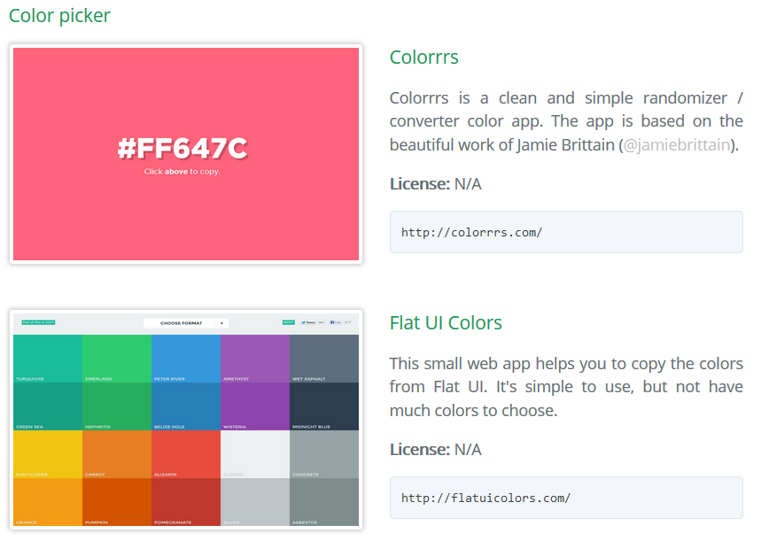

How to use
- First, we need to know which type of resource we need.
- Then, search in the TOC the category. Clic on it and it will take to that section.
- You can view which subcategories have. I put subcategories for best organization and search.
- Select your subcategory, they will take you to new page with the content listed.
- You will see an index, where you can view which resources have this section. You can clic on it and it will take to the selected resource.

This pages contains photo of the resource, name, description, type of license and the url.
In icon legend you can view the icons that resources have attached.
Table of Contents
Icon Legend
You may have noticed that there are icons next to the title of each resource. That's why every resource have his own features. The icons are there to show you the most important features.
You only need to put the cursor over the icon and it will show you the name of the feature. EASY!